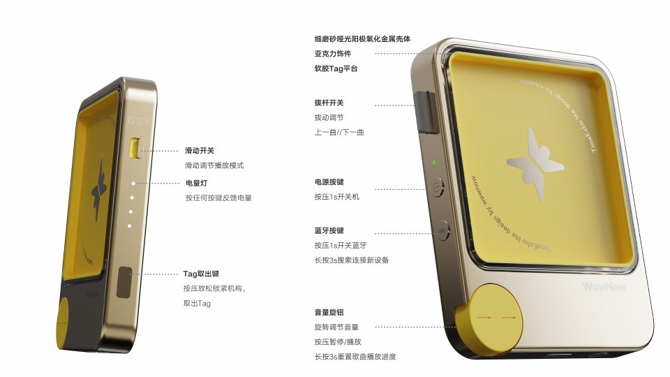

设计目标
用户不需要阅读说明书，不依赖屏幕菜单，就可以完成绝大多数播放操作。
PocketEcho 是一款强调实体交互、离线使用、弱屏幕甚至无屏幕体验的便携音乐播放器。评审重点不是“按钮有多少”，而是用户拿起设备后，能否自然地完成播放。

当前 PocketEcho 采用大量实体控件，符合无屏 / 弱屏播放器定位。评审要确认的是：每一个控件是否只承载一种核心认知，以及系统是否能让状态被看见、被听见、被摸到。
用户不需要阅读说明书，不依赖屏幕菜单，就可以完成绝大多数播放操作。
音量、播放 / 暂停、上一曲 / 下一曲，都拥有明确的实体入口。
播放模式、电量、蓝牙连接状态，需要通过位置或统一 LED 状态语言持续表达。
当前方案整体合理，实体交互也形成了产品辨识度。风险集中在长按过多、隐藏功能不易发现，以及无屏状态下的反馈不完整。
评审表同时看当前操作、合理性、认知风险与建议动作。金黄色是推荐优先落地的方向。
| 控件 | 当前操作 | 合理性 | 主要问题 | 建议 |
|---|---|---|---|---|
| 播放模式滑块 | 滑动切换播放模式 | ★★★★☆ | 如果只是循环切换模式，物理位置无法表达状态 | 固定档位，让“位置 = 模式” |
| 电量灯 | 按任意按键显示电量 | ★★★★★ | 低电量状态还可以进一步强化 | 增加低电量闪烁 |
| Tag 取出键 | 按压释放 Tag | ★★★★★ | 基本无明显问题 | 保留 |
| 曲目拨杆 | 上一曲 / 下一曲 | ★★★★☆ | 快进 / 快退尚未利用拨杆 | 短拨换曲，保持实现快进 / 快退 |
| 电源键 | 按压 1 秒开关机 | ★★★★☆ | 开机需要等待，可能导致用户误判没电 | 短按开机，长按 2 秒关机 |
| 蓝牙键 | 开机默认熄灯；单击 / 长按进入不同连接路径 | ★★★★☆ | 已连接后的单击关闭、长按换机，需要被明确反馈并防止误触 | 单击连接已配对耳机；长按新设备配对；成功常亮 |
| 音量旋钮 | 旋转音量；短按播放 / 暂停；长按 3 秒 Reset | ★★★★☆ | 长按 Reset 学习成本较高 | 保留核心播放控制，优化 Reset 文案与反馈 |
旋转和短按都属于当前播放控制；长按 Reset 却切换到了播放状态管理。它不是常见的“重新播放当前歌曲”，而是恢复到歌曲初始 / 未播放状态。
用户可以自然推断“旋转调音量”“按压播放 / 暂停”，但很难仅靠传统播放器经验猜到“长按音量旋钮 = Reset 当前歌曲状态”。
不增加额外按钮，通过“短拨”和“保持”把歌曲导航与时间轴导航分开。这样既保留机械感，也让硬件承担更多连续操作。
短操作控制“歌曲”；持续操作控制“歌曲时间轴”。这是 PocketEcho 最具有产品辨识度的实体操作之一。
截图中的状态机比原来的“1 秒开关蓝牙 / 3 秒搜索新设备”更完整：它把已配对耳机连接、新设备配对、已连接关闭和换机路径放进同一套可解释的灯语义中。
播放模式属于持久状态，实体滑块最适合表达它。LED 则从电量显示，发展为 PocketEcho 的无屏状态语言；关键不是更多灯效，而是固定、可识别的语义。
用户不用点亮任何 LED，只需要看或摸到滑块位置，就能知道当前播放模式。
以下两套方案与底部 A／B 模拟器一一对应，作为可独立测试的交互分支。
| 控件 | 操作维度 | 方案 A · 基线实体拨杆 | 方案 B · 独立按键 |
|---|---|---|---|
| 电源键 | 短按 / 长按 2 秒 | 短按开机；长按 2 秒关机 | 短按开机；长按 2 秒关机 |
| 播放旋钮 | 旋转 / 短按 / 长按 | 旋转音量；短按播放 / 暂停；长按重置播放 | 360° 旋转快退 / 快进；短按播放 / 暂停 |
| 曲目控制 | Tap / Hold / 松手回弹 | 拨杆短拨上一曲 / 下一曲；保持快退 / 快进 | 独立上一曲 / 下一曲按钮，点击即执行 |
| 音量控制 | 连续调节 | 播放旋钮连续调节音量 | 音量拨杆上 / 下调节；保持时连续变化 |
| 播放模式 | 固定三档滑块 | I 顺序；II 单曲循环；III 随机 | I 顺序；II 单曲循环；III 随机 |
| 蓝牙键 | 单击 / 长按 3 秒 / 已连接态 | 连接已配对耳机；新设备配对；已连接时关闭 / 换机 | 沿用同一连接意图；在硬件分支中验证按键布局 |
| Tag 取出键 | 按压 | 释放锁紧机构，取出 TimeTag | 释放锁紧机构，取出 TimeTag |
| LED | 常态 / 反馈动效 | 电量 + 低电量闪烁 + 统一状态动效 | 电量 + 低电量闪烁 + 统一状态动效 |
这套原则不是为了让用户记住更多操作，而是让每一种操作维度都拥有稳定、一致的心理模型。
90% 的日常播放场景，应该只需要两个核心控件：播放旋钮 + 曲目拨杆。
PocketEcho 不应该追求
“用户记住所有操作”，而应该追求
“用户根本不需要学习操作”。
旋钮沿用 TimeEcho 的播放控制心智模型；上一曲 / 下一曲改成独立按钮，避免“旋转到底是切歌还是快进”的歧义。音量再由独立拨杆承接，三类动作彼此分开。
优点：控件数量少，方向语义基本成立。
风险：音量旋钮和播放控制共用一个输入；拨杆的短拨与保持需要学习。
优点：播放、曲目、音量三个意图拆开；更接近 TimeEcho 的旋钮习惯。
代价：需要确认机身空间，并增加独立音量与曲目输入的结构成本。
| 评估维度 | 当前方案 A | 独立按键版 B | 评审判断 |
|---|---|---|---|
| 旋钮语义 | 音量 + 播放 / 暂停 | 快退 / 快进 + 播放 / 暂停 | B 与 TimeEcho 一致 |
| 曲目切换 | 拨杆短拨 | 独立上一曲 / 下一曲按钮 | B 的误触风险更低 |
| 音量调节 | 旋钮连续调节 | 拨杆上 / 下，保持连续调节 | 需要确认拨杆的阻尼与加速曲线 |
| 无屏反馈 | 同一拨杆需要区分短拨 / 保持 | 按钮反馈简单；音量需要持续反馈 | B 更容易被听见、被确认 |
| 硬件代价 | 控件数量较少 | 需要独立曲目键 + 音量拨杆 | 进入 ID Freeze 前确认空间与成本 |
最终目标：减少按钮数量，减少隐藏逻辑，减少用户记忆，强化实体反馈，建立 PocketEcho 自己的操作语言。
这是 A 版基线模拟器：左 / 右键模拟曲目拨杆，播放旋钮模拟音量与播放控制，蓝牙键模拟连接、配对、关闭和换机。
操作提示：短按执行高频动作；长按达到阈值后进入低频功能。蓝牙按钮：短按连接已配对设备，长按 3 秒进入新设备配对。
按下左 / 右控制，观察“曲目”与“播放时间轴”的区别；按住蓝牙按钮，观察慢闪、快闪与常亮的状态切换。
独立按钮只执行上一曲 / 下一曲；旋钮只处理时间轴。音量拨杆向左 / 向右调节，保持时可连续变化；蓝牙短按连接已配对耳机，长按 3 秒进入新设备配对。
这组模拟器把“曲目切换”从旋转动作中拿出来，用两个明确按钮验证误触是否下降。